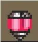
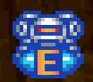

| Sprite | Função | Informações |
|  | Eleva sua vida máxima | Os Heart Tanks são encontrados em grande parte das fases, e para pegá-los os requisitos vão de somente encontrá-los até ter a melhoria das botas e/ou das luvas. Dentre todo o jogo, podemos encontrar até 8 desses itens. |
|  | Quando estiver com a vida cheia, ele reservará as vidas extras que você pegar para poder usar a qualquer momento | Assim como os heart tanks, os Sub Tanks ficam escondidos e, em algumas ocasiões, deve-se possuir a melhoria das botas e/ou das luvas. Mas diferente dos Heart Tanks só possuem 4 desses itens no jogo. |